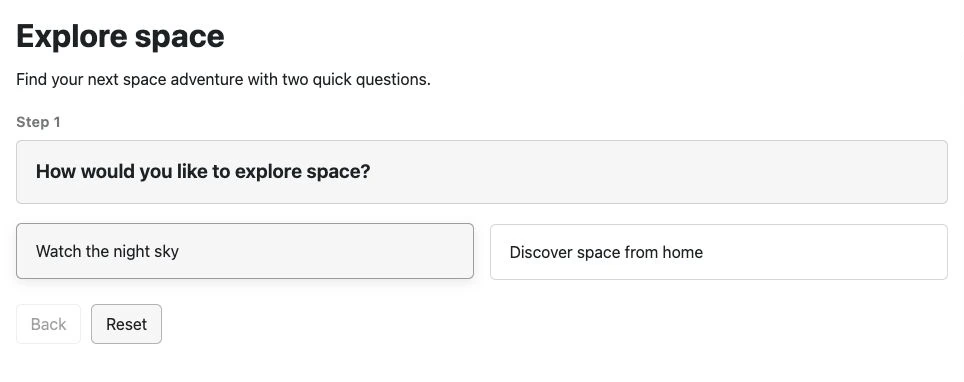

Article 1 · Existing article · /
Copy preview only. Live Joomla styling and working components are checked during staging.
Web extensions by Grant Hood
Simple tools to help users find the right information, faster.
Help visitors make sense of complex content with short questions and clear next steps. Decision Tree is useful for service guidance, product selection, support journeys and websites where people may not know what to search for.
Decision Tree for Joomla
Build a guided question-and-answer tool and display it in a Joomla article or on its own page. Version 1.4.0 adds a visual canvas for arranging questions, outcomes and the paths between them.

Decision Tree Pro
Create multiple trees, reuse complete workflows and build richer outcomes with headings, text, lists, images and buttons. Preview an individual branch or outcome while editing, and optionally use anonymous analytics to understand how the journeys are used.
Decision Tree Free
Start with one decision tree per site, the same visual canvas and basic text outcomes with a call-to-action link.
Built for Joomla 5 and Joomla 6.